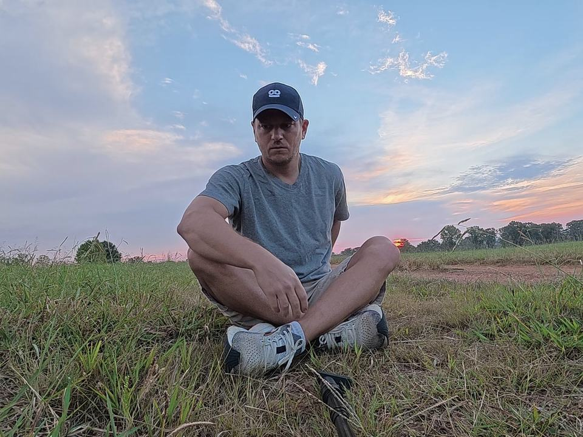
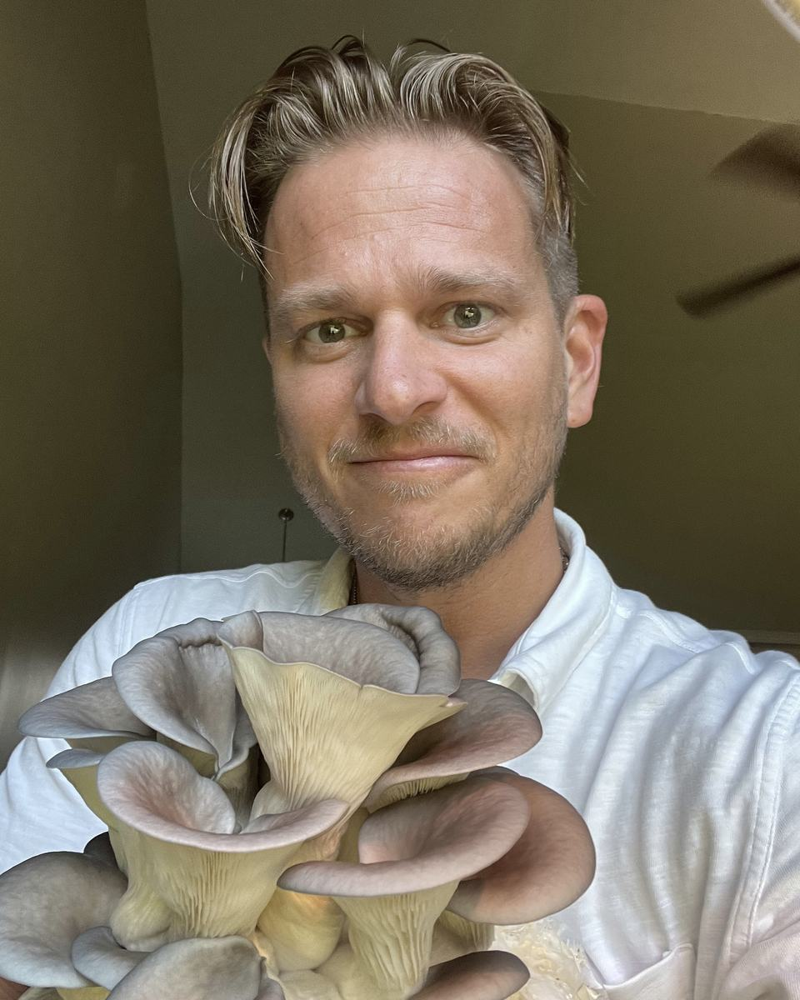
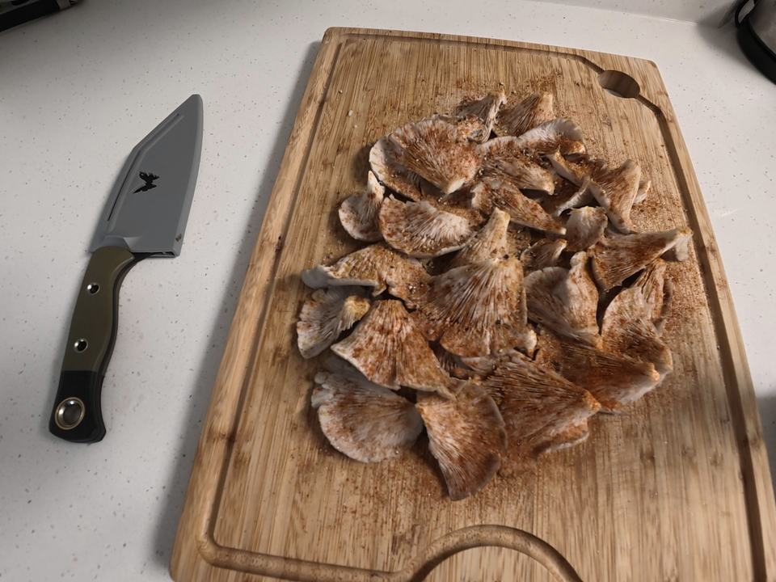
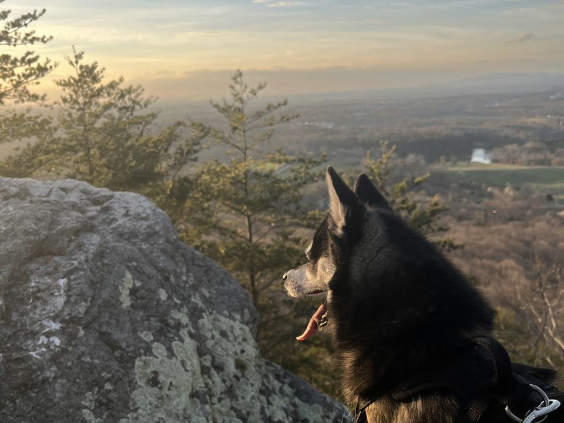

Breath
The one thing you never stop doing, done on purpose. Slow it down to come back to yourself, speed it up to wake up, and let it carry out what you have been holding.

About
I am Don. Clay & Air is how I put my life back together, and it is how I want to help other people heal.
My story
I know what it is to watch the life I spent decades building become unrecognizable. Over a short stretch, I buried people I loved, lost my marriage, my financial foundation, nearly every relationship I had, and the day-to-day life I knew with my kids. I found myself in a spare bedroom, starting again from scratch, while the responsibility to work, provide, and keep going remained.
I found plant medicine, and it saved me. Eventually that led me to breathwork, which empowered me by showing me I could bring my body into a deep meditative state with nothing but my own breath.
The rest came slowly. Eating clean. Time outside, in the woods and around a fire. Breathing on purpose. I have felt the pain, and I have felt the recovery that comes after it. I want to help other men find their way through to the other side.

The Practice
Three things, every day. Each one helps on its own. Together they are how I rebuilt.

Breath
The one thing you never stop doing, done on purpose. Slow it down to come back to yourself, speed it up to wake up, and let it carry out what you have been holding.

Discipline
The small things done daily when nobody is watching. Cold water. Clean food. Clearing out what drains you and making room for something that grows.

Daylight
Real sun, early and every day. Outside, no sunglasses, the sky in your eyes and light on your skin. Your body sets its clock by the sun, and most of us live under ceiling lights. On the days it does not show, red light fills the gap.
Where I am now
I am training with Ben Holt through Awakened Breath and the 21 Day Breathwork Academy, and I practice every day. The library is what I practice, shared as I learn it.